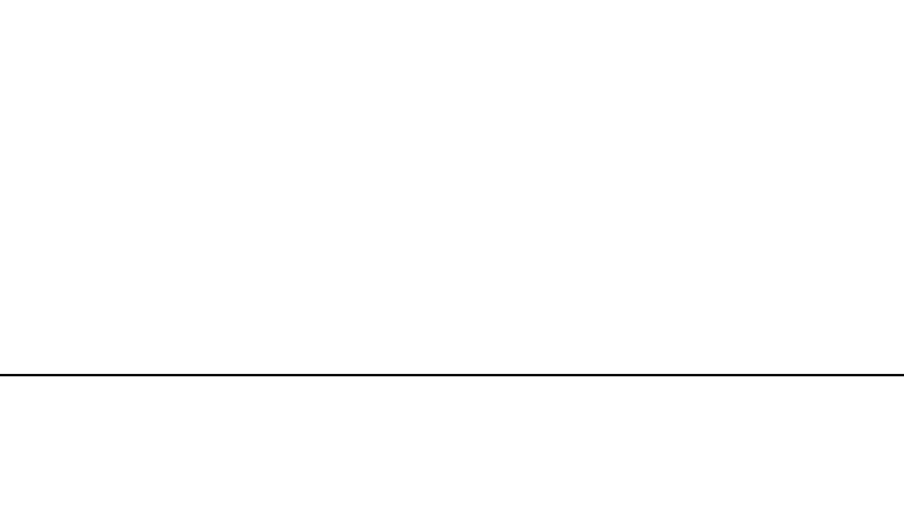

The purpose of this chapter is to quickly explain how we will proceed along this path.
If the number 0 sounds strange, be aware that computer science always starts with 0
and not 1. I don't know if this is a method that someone has already invented, but personally
I have not seen it explained by anyone before.
Big picture
Contrary to most of my homies i have always loved to study.
And after some debate I came to the conclusion that it is probably
because I see studying differently from my friends. So try to think
about something you take for granted such as speaking. How did you learn to speak?
Well usually in school they taught you the alphabet and the sounds of each letter,
then they taught you that by putting the letters together you could form many words
each with a different meaning. Afterwards you put the words together into sentences
according to precise rules. Et voila the magic is done now you know how to speak.
I call it the big picture method because in my head these steps are like a very complex
big picture that is made up of the various parts where each one is the logical consequence
of the previous. Isn't this a more fascinating approach to studying than memorizing information
and taking it for granted? That method can be applied to more complex things. For example,
mathematics is constructed entirely in this way starting with axioms and expanding the picture
through theorems and demonstrations. Regarding computer science, I have never found anyone using
this method with balance. If you study independently at home, you will only find superficial
lessons on specific languages. On the other hand studying at school the picture is often
overwhelmed by a mountain of boring and often useless technical details. Here in this path
I will do my best to make the picture obvious so that when we get to see the first line of
code it is obvious why and how it works.
Special guest
I managed to get in touch with a real expert who will help us on our path. Unfortunately,
he's a bit shy, so he won't introduce himself today, but you'll see him in the next chapter.
He kindly invited us to sleep at his house. Look at this breathtaking view

(if it is white it is not a mistake)
Lovely, isn't it? Thank you for reading this far and we will see each other the next Sunday
FINAL SPAM
if you want to support my work you can:
disable the ad block for free
or donate something to my
Ko-Fi
If you want to find out trivia about the IT world I post daily on my:
Instagram page
if you want to share with me ideas about small projects to do and keep yourself trained by programming every week you can follow me on my:
Tik tok
&&
Youtube